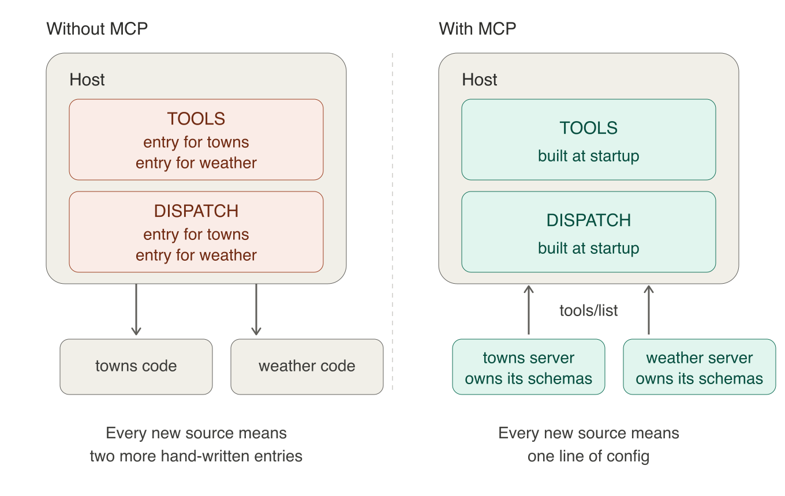
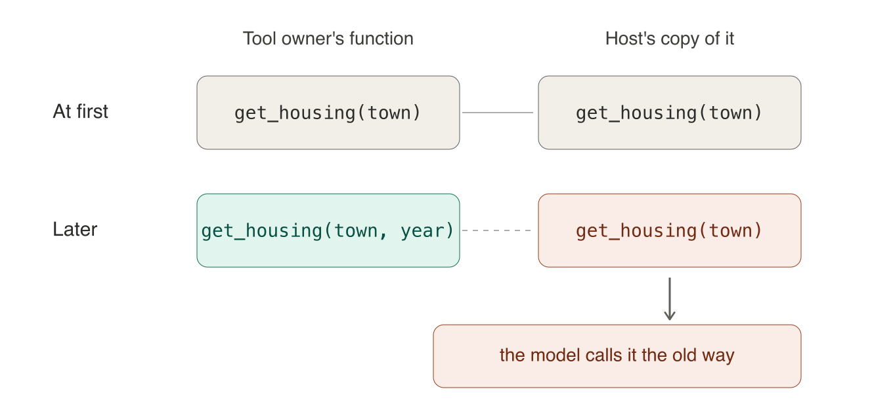

What MCP Actually Removes From a Host
The previous article showed the host building its tool list and dispatch map by hand, and this one is about what MCP does to those two structures.
The Model Context Protocol is usually introduced with a diagram. On the left, (M) AI applications. On the right, (N) tools. Between them, a dense mesh of M×N one-off integrations. Then a second diagram: MCP in the middle, M+N connections, order restored.
The claim sounds reasonable, but a diagram is not something you can check. I wanted to know what it meant in actual host code, so I built the smallest thing that would tell me.
The three roles
MCP is a JSON-RPC protocol connecting an AI application to external tools.
- The host is the application you write. It owns the model calls, the permissions, and the loop that ties them together.
- The client is a component inside the host managing one connection to one server. The SDK provides it as
ClientSession, so you never write protocol code. - The server is a program exposing capabilities, written by whoever owns the tool.
Servers commonly expose tools, and also resources (read-only data) and prompts (user-selected templates). This experiment only uses tools.
The experiment
I wrote a small MCP server that reads a CSV of Massachusetts town data and exposes four tools: median home price, school rating, crime rate, and distance to Boston.
Then I wrote two hosts against it. The first one takes the tool name from the command line. There is no LLM involved at all, so I could watch the protocol messages without model behavior getting in the way. The second one adds an LLM: the model proposes which tool to call, and the host checks that call before running it.
What follows compares that second host against the version I would have to write without MCP. That version is not in the repo, it is the thing this article is about.
One note on wording: I use “model” and “LLM” interchangeably throughout.
Without MCP: two structures that grow
Suppose there is no MCP. You have two tool sources: a Python package for the town data, and a weather service with an HTTP API and no package at all. To let a model use either one, you have to write two things yourself, and both live in your host.
import requests
import town_explorer
TOOLS = [
{"type": "function", "name": "get_housing",
"description": "Median home price for one town, in USD.",
"parameters": {"type": "object",
"properties": {"town": {"type": "string"}},
"required": ["town"]}},
{"type": "function", "name": "get_schools",
"description": "School district rating for one town, 1 to 10.",
"parameters": {"type": "object",
"properties": {"town": {"type": "string"}},
"required": ["town"]}},
{"type": "function", "name": "get_forecast",
"description": "Weather forecast for a coordinate.",
"parameters": {"type": "object",
"properties": {"lat": {"type": "number"},
"lon": {"type": "number"}},
"required": ["lat", "lon"]}},
# one block per tool
]
# The weather service has no Python package, so the call is mine to write.
def get_forecast(lat, lon):
r = requests.get("https://api.example.com/forecast",
params={"lat": lat, "lon": lon})
r.raise_for_status()
return r.json()["properties"]["forecast"]
DISPATCH = {
"get_housing": town_explorer.get_housing,
"get_schools": town_explorer.get_schools,
"get_forecast": get_forecast,
# one entry per tool
}TOOLS is what the model sees: each tool’s name, what it does, and what arguments it takes, written in the format the model provider (OpenAI, Anthropic) expects. DISPATCH is how the host gets from the name the model picked back to the function that runs. Both grow by one entry every time you add a tool.
Notice that the two sources are not even the same kind of work. The town data arrived as a Python package I can import. The weather service did not, so the HTTP call, the error handling, and the digging into the response body are all mine. Every new source is its own small integration project, and the shape of it depends on what the owner happened to ship.
Notice what the TOOLS entry actually is. Someone else wrote get_housing, and they decided it takes one argument called town. My TOOLS entry is my handwritten copy of that decision. Nothing checks that the copy is still right. If they release a new version where get_housing also requires a year, my copy still tells the model there is one argument, and the model keeps calling it the old way.
With MCP: the catalog arrives at runtime
The server declares its tools once
Now the same tools, but the owner has wrapped them in an MCP server instead of shipping a package. On their side, each tool is an ordinary function with a decorator on it. FastMCP is the class that turns a Python module into an MCP server, and @mcp.tool() marks a function as something the server should offer:
from mcp.server.fastmcp import FastMCP
mcp = FastMCP("towns")
@mcp.tool()
def get_housing(town: str) -> dict:
"""Median home price for one town, in USD."""
...That decorator is doing the work that TOOLS used to do. FastMCP reads the function’s signature and builds the argument schema from it: the parameter name town becomes a property, the str annotation becomes "type": "string", and because the parameter has no default it goes into the required list. The docstring becomes the tool’s description, which is the sentence the model reads when deciding whether to call it. Asking the server what it offers returns exactly that:
{
"name": "get_housing",
"description": "Median home price for one town, in USD.",
"inputSchema": {
"type": "object",
"properties": {"town": {"title": "Town", "type": "string"}},
"required": ["town"],
"title": "get_housingArguments"
}
}The tool owner wrote a function and a docstring. Everything else was generated.
The weather service gets the same treatment. Its server is a thin wrapper around the same HTTP call I wrote by hand earlier:
mcp = FastMCP("weather")
@mcp.tool()
def get_forecast(lat: float, lon: float) -> dict:
"""Weather forecast for a coordinate."""
r = requests.get("https://api.example.com/forecast",
params={"lat": lat, "lon": lon})
r.raise_for_status()
return r.json()["properties"]The GET request did not disappear. It moved into the server, where it belongs to whoever owns the service rather than to me.
The host asks what is available
Three names from the MCP Python SDK show up on this side, so briefly:
StdioServerParameterssays how to start a server: a command and its arguments, the same thing you would type in a shell.stdio_clientruns that command as a child process and hands back two pipes, one to read from and one to write to. It moves bytes and knows nothing about MCP.ClientSessionwraps those pipes and speaks JSON-RPC, soinitialize,list_tools, andcall_toolare method calls rather than JSON messages you assemble yourself. This is the MCP client I mentioned earlier, the piece inside the host that manages one connection to one server.
Here is a complete host program that connects to two servers, one for town data and one for weather, and builds the same two structures I would otherwise have written by hand:
import asyncio, sys
from contextlib import AsyncExitStack
from mcp import ClientSession, StdioServerParameters
from mcp.client.stdio import stdio_client
# Each server is just a command to run. Both of mine are Python,
# but a server can be anything: an npm package, a Go binary, a remote URL.
SERVERS = {
"towns": [sys.executable, "towns_server.py"],
"weather": [sys.executable, "weather_server.py"],
}
async def main():
tools = [] # what the model sees
dispatch = {} # how the host runs a call
async with AsyncExitStack() as stack: # bookkeeping: closes every connection on the way out
for server_name, cmd in SERVERS.items():
# Start the server as a child process and open a session on it.
params = StdioServerParameters(command=cmd[0], args=cmd[1:])
read, write = await stack.enter_async_context(stdio_client(params))
session = await stack.enter_async_context(ClientSession(read, write))
await session.initialize() # agree on protocol version
# Ask this server what it offers, and record each tool twice:
# once for the model to read, once so we know how to run it
for t in (await session.list_tools()).tools:
# prefix the name: two servers can both offer "search"
qualified = f"{server_name}__{t.name}"
tools.append({"name": qualified,
"description": t.description,
"parameters": t.inputSchema})
dispatch[qualified] = (session, t.name)
# Later, when the model picks a tool by its qualified name:
session, real_name = dispatch["towns__get_housing"]
result = await session.call_tool(real_name, {"town": "Winchester"})
print("".join(b.text for b in result.content))
asyncio.run(main())Running it prints the three tools the two servers between them offer, and then the result of the call:
towns__get_housing | Median home price for one town, in USD. | ['town']
towns__get_schools | School district rating for one town, 1 to 10. | ['town']
weather__get_forecast | Weather forecast for a coordinate. | ['lat', 'lon']
{"town": "Winchester", "median_home_price": 1250000}tools and dispatch are the same two structures as before, doing the same two jobs. The difference is that nothing in the host program describes a tool. The loop asks each server and writes down the answer, and the host program would be identical if the servers offered thirty tools instead of three.
Without MCP, the two structures grow linearly: every tool added means one more hand-written entry in each. With MCP they do not grow at all.
That is a specific claim, and I want to keep it specific. Plenty of other things still grow as you add tools: the context the schemas take up, the validation you write, the permissions you decide, the tests. Adding tools still costs something. The bookkeeping is what went away.

Discovery is the part doing the work
This is the drift problem from earlier. Without tool discovery via session.list_tools(), the host is holding its own description of somebody else’s function. It is right on the day you write it, and after that nobody is checking. The model can only work from what that description says, so when it goes stale the model is the one calling the tool wrongly.

tools/list fixes this by asking the server every time the host starts. The server owns its tools, so the server’s description is the correct one, and that is the description the model sees.
MCP does more than discovery. It also standardizes how a session starts, how tools get invoked, how results and errors come back, and how the messages travel.
What MCP does not solve
Provider adapters remain. MCP hands the host tool.name, tool.description, and tool.inputSchema, and stops there. The host still has to wrap those three fields in whatever shape the model provider expects, and every provider expects a different one:
def to_openai_tools(mcp_tools):
return [{"type": "function", "name": t.name,
"description": t.description,
"parameters": normalize_for_openai(t.inputSchema)}
for t in mcp_tools]
def to_claude_tools(mcp_tools):
return [{"name": t.name, "description": t.description,
"input_schema": normalize_for_claude(t.inputSchema)}
for t in mcp_tools]These are short because OpenAI, Anthropic, and MCP all describe tool arguments using JSON Schema, so most of the time only the wrapper around the schema changes. It does not always copy cleanly, though: FastMCP emits fields like title that providers do not need, and providers support different subsets of JSON Schema, so a real adapter normalizes rather than passes through.
The useful thing about this cost is that it does not grow. You write one adapter per provider, and it stays the same whether you connect four tools or forty.
Tool schemas cost you context. If your host sends the whole tool list with every request, which is the obvious way to write it, the model re-reads all those schemas every turn. The fix is host-side: keep the full definitions in your own memory, show the model names and descriptions, and load a schema only when it picks that tool. The protocol does not help here, and the MCP client best practices are explicit that this is the host’s problem.
When MCP is worth it
If the tool is a Python function I wrote myself, importing it is simpler. Calling it is a dictionary lookup. Going through MCP means starting a subprocess, opening a session, and making the whole host async to get to the same function. For one host and a handful of stable local tools, MCP can easily cost more than it saves.
The reasons to use it anyway are not about writing less code.
It becomes worth it when at least one of these holds:
- The tool is owned by someone else, so their schema changes propagate without my involvement.
- The tool is written in another language.
- The tool runs in another process or remotely.
- Dependency or crash isolation matters. An ordinary import runs inside the host interpreter and creates no process boundary.
- The application is a general-purpose host whose users connect it to servers I have never seen.
Code companion
The mcp-town-explorer repo has the server, the command-line host, and the LLM host. The command-line host takes a --verbose flag that prints every protocol message to stderr, which is the fastest way to see what initialization, discovery, and invocation actually look like on the wire.
Closing
The host no longer writes a schema entry and a dispatch entry for every tool. The server publishes them, the host asks at startup, and the copy that used to go stale no longer exists.
What MCP moved is the tool description, back to the party that owns the tool, with one standard way for the host to discover and invoke it.